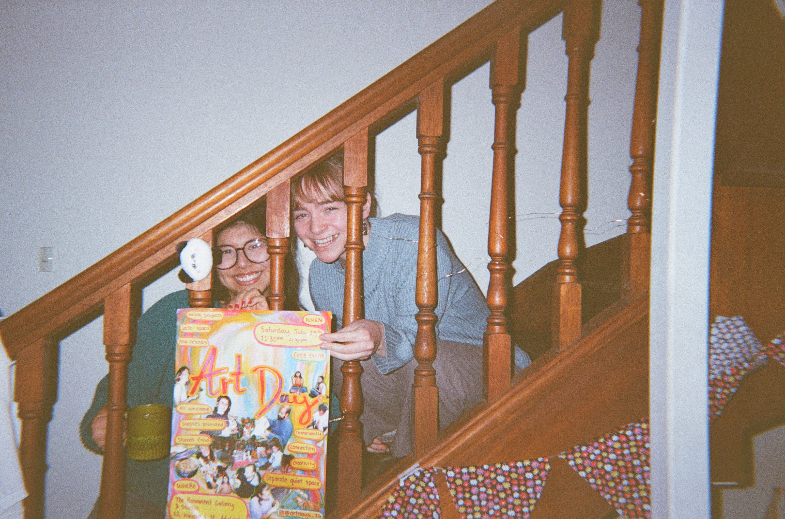
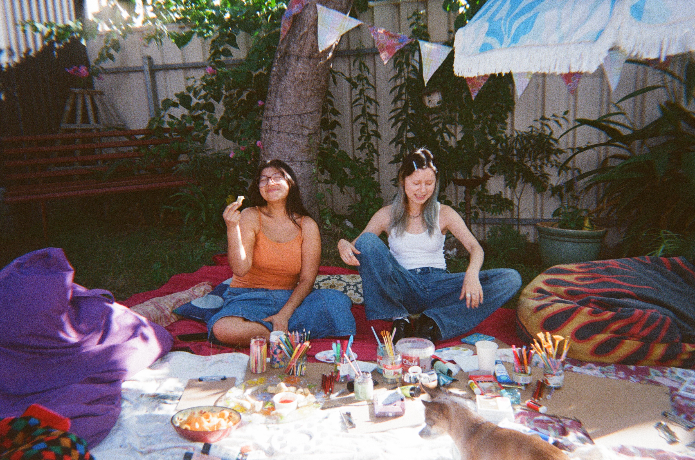
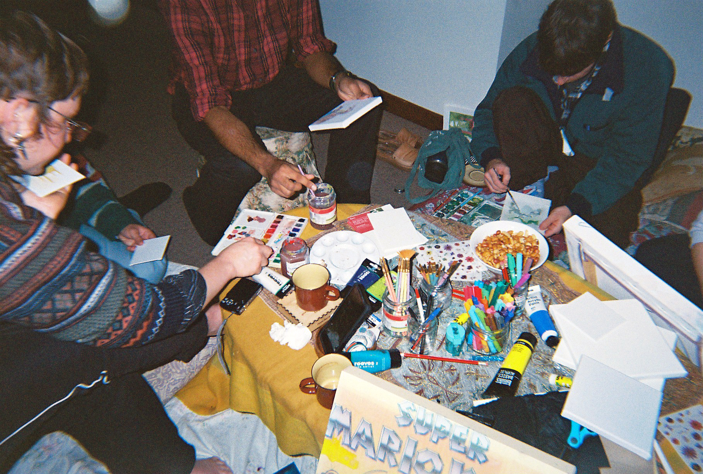
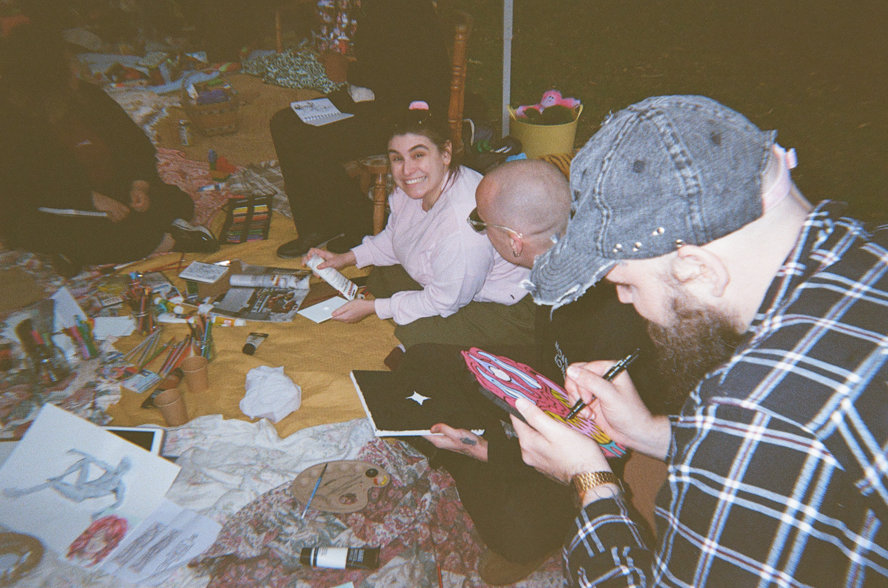
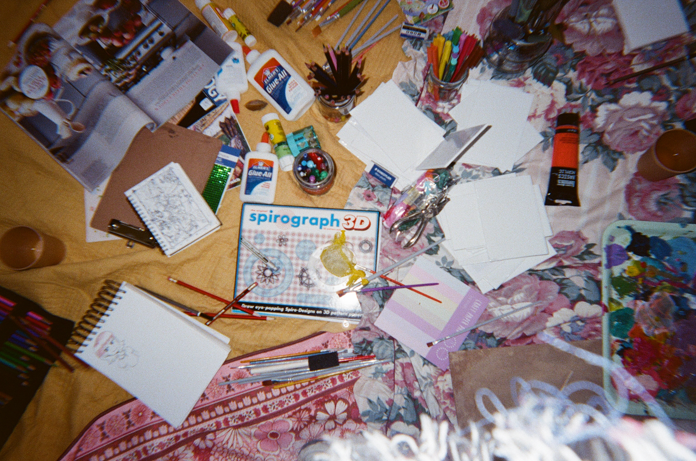
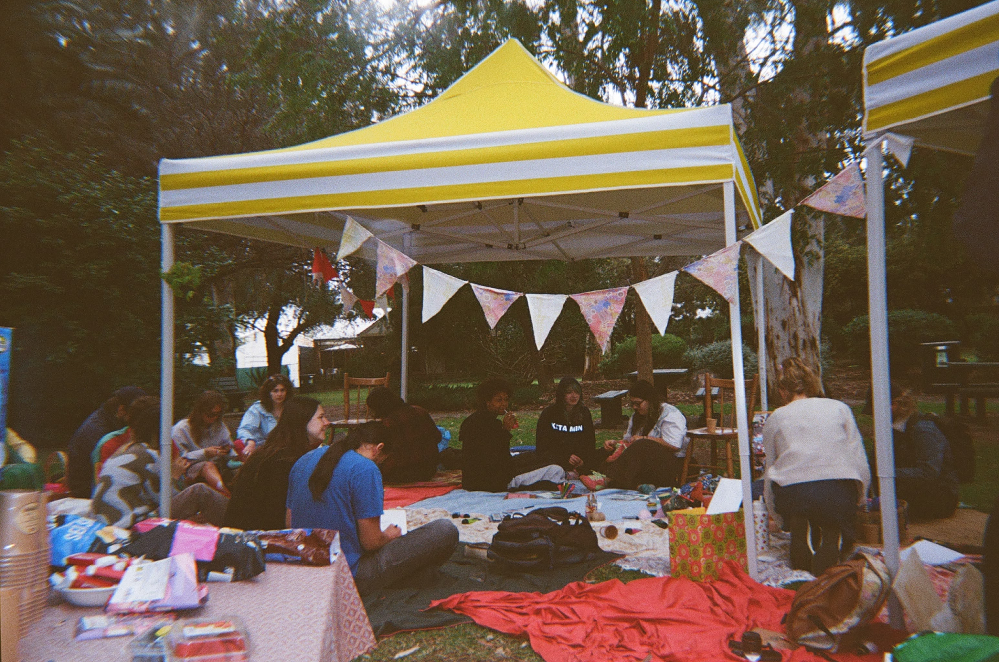

what we're all about!
What is Art Day?


Art Day is a free event where people work on their own creative projects in the same space while meeting and socialising with others. Art supplies are provided for painting, drawing, collaging, clay and more.
Everyone is invited to bring projects or supplies in any creative medium of their choosing, including sewing, digital art, writing and music.
There will be free food for people to help themselves to, and we have a separate quiet space at our events for anyone who feels overstimulated or socially drained.
What are we all about?


We want to build community through art. Social disconnection and digital overload are hitting harder than ever in a world that feels more out of our control every day.
Art Day is about carving out a space away from all this, where we can come together and get back in touch with what recharges us the most.
By holding these as monthly events, we hope to be the springboard for a community life beyond just the events themselves.
What are our values?


We want everybody that comes to Art Day to feel welcome and considered. Which means it is an absolute priority for us to make it an inclusive, queer-friendly, accessible, and respectful environment.
Art Day at its heart is about kindness, open-mindedness, curiosity, and play!